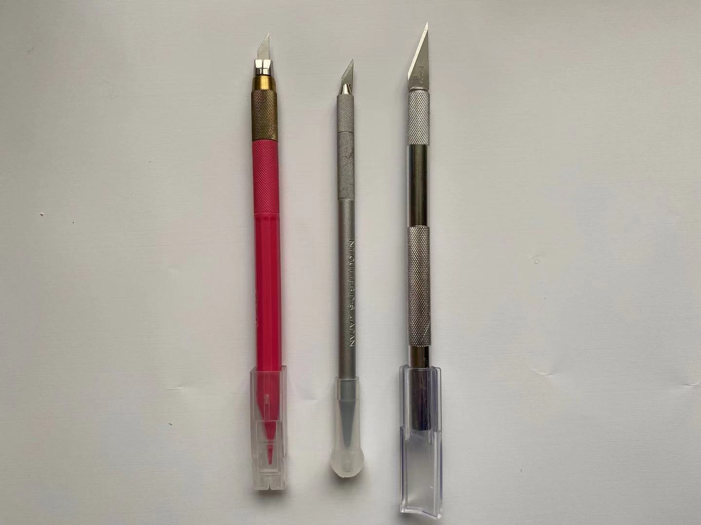

Carving knives have differnet size for engraving different lines. The narrower the blade, the more suitable for thin lines, and vice versa. Longer blades are more suitable for cutting edges than engraved lines. The shape is just like a pen, making it easier for people to use.
